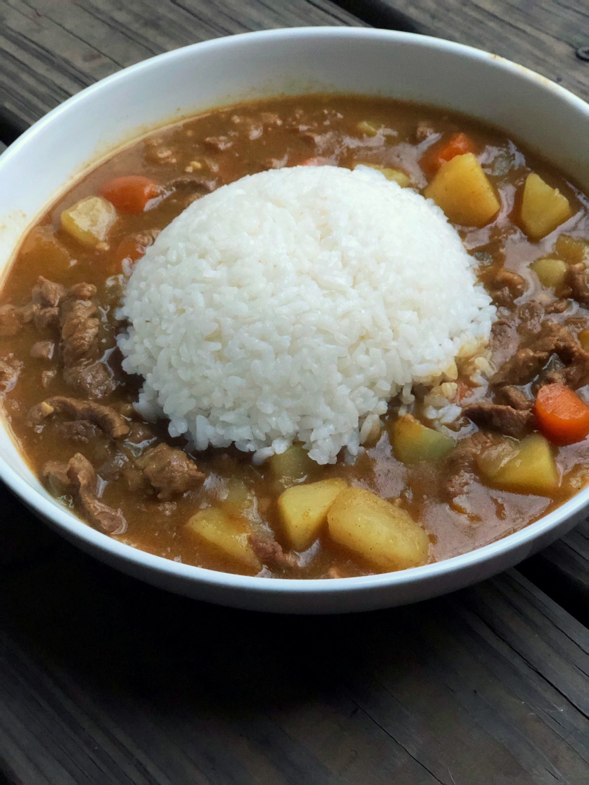

Odin Recipes
Japanese Curry

Delicious Japanese Curry
This curry is as delicious as it is simple and you will never guess what the
ingredient is that gives it that signature flavor. HONEY!
I shit you not, you can put anything you want in here. Beef, pork, chicken.
I'd even toss a racoon in if I could get my hands on one. It's delicious no matter what.
Ingredients
- 2 lbs Meat(any ol' meat will do)
- Honey
- Garam Marsala
- Soy Sauce
- Potato or starch(Daicon)
- Stock(match the meat)
- Carrots
- Flour or Corn Starch
- Onions
- Garlic
Steps
- Cook the meat. I normally make this in the Instant Pot and use the saute function.
- Add the onions and garlic and cook until delicious smelling.
- Add everything else besides the thickening agent(Agent Thickening, reporting for duty).
- Pressure cook on high for 15 minutes.
- Do a rapid pressure release. Smell that delicious curry goodness.
- Add the thickening agent until you like what it looks like.
- Serve with white rice.
- Eat lots. :-)